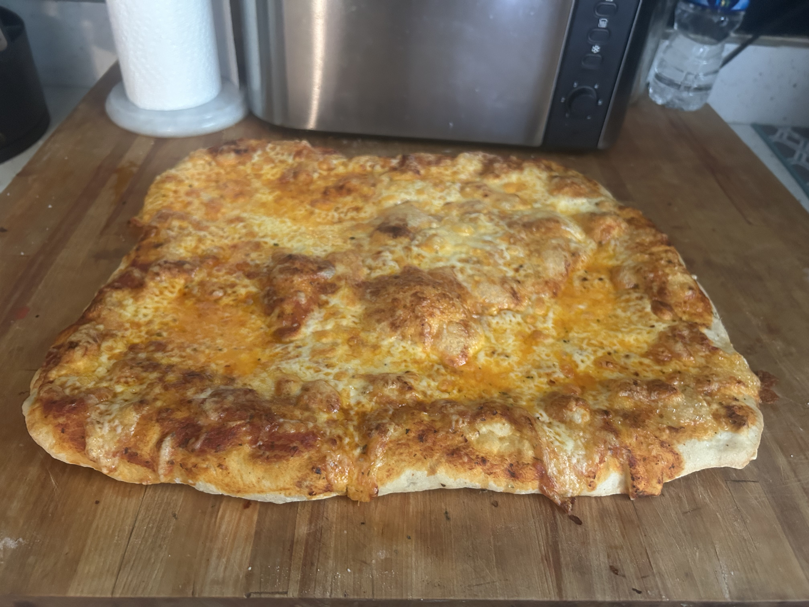
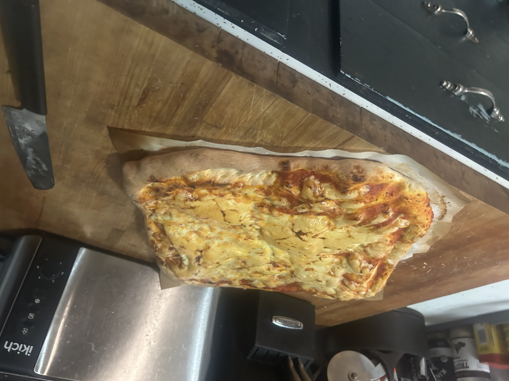

| PRE-RISE | |
|---|---|
| Room-temperature water | 1 cup |
| Fast-acting dry-instant yeast | 1 tablespoon |
| White sugar | 1 tablespoon |
| MIXING | |
|---|---|
| All-purpose flour | 6 Cups |
| Room-temperature Water | 3 Cups |
| White Sugar | 1 Tablespoon |
| Iodized Salt | 1 Tablespoon |
| Olive Oil | 1 Tablespoon |
| BUILDING | |
|---|---|
| Light dressing of olive oil | |
| Oregano | |
| Basil | |
| Crushed red pepper flakes | |
| Ground garlic powder | |
| Bottled Parmesean | |
| Whole-Milk Low-Moisture Mozzerella Block Cheeze | 1/2 Lbs |
| Can of Pizza Sauce | |
| White Sugar | |
| Iodized Salt |
| Tools Options (if available) | |
|---|---|
| Parchment Paper | |
| Pizza Stone/Steele | |
| Pizza Shovel | |
| 1-2 Large Bowls/2-3 Medium Bowls | |
| Knife or Spoon | TIP!: Nearly Any Task Requiring One Is Technically Possible With The OTher. (Be Careful!) |
| Oven Mits: Saftety First AND Always! |

